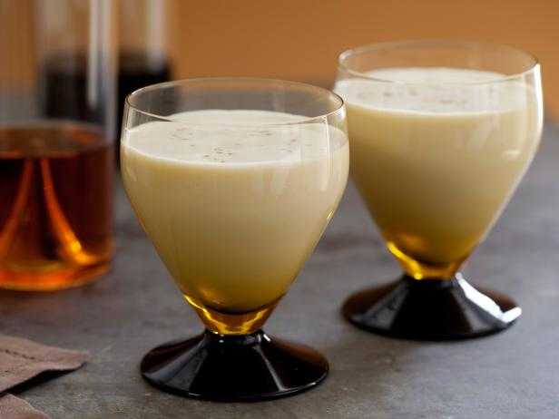

Alton Brown's Eggnog Recipe

Description
Store bought eggnog can't compare! If you've been avoiding eggnog based on past experiences, give this holiday treat one more try! Here's how to make it:
Ingredients
- 1 pint of whole milk
- 1 cup of heavy cream
- 3 ounces of bourbon
- 4 eggs, separated
- 1/3 cup of white sugar, plus 1 tablespoon
- 1 teaspoon of freshly grated nutmeg
Steps
- In the bowl of a stand mixer, beat the egg yolks until they lighten in color. Gradually add the 1/3 cup sugar and continue to beat until it is completely dissolved. Add the milk, cream, bourbon and nutmeg and stir to combine.
- Place the egg whites in the bowl of a stand mixer and beat to soft peaks. With the mixer still running gradually add the 1 tablespoon of sugar and beat until stiff peaks form.
- Whisk the egg whites into the mixture. Chill and serve.